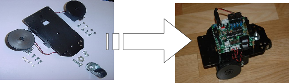
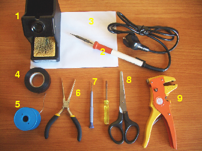

|
Taller de Robótica Básico - Skybot v1.4. - SESION 2 |
|
 |
Terminar la estructura, preparar lo sensores, montar la electrónica y probar el robot
Material adicional (no incluido en el kit del robot) que se va a necesitar para esta sesión:
|
 |
1) Soporte para soldador 2) Soldador 3) Un folio en blanco 4) Rollo de cinta aislante negra 5) Rollo de estaño de 1mm 6) Alicates de cabeza plana 7) Destornilladores de cabeza plana 8) Tijeras 9) Pelacables (opcional) 10) Alambre |
Primero finalizaremos la estructura del robot, montando los servos sobre el chásis, terminando las ruedas y colocando la rueda loca trasera. Seguir los pasos descritos aquí.
Para poder mover los motores desde el microcontrolador necesitamos una etapa de potencia: una electrónica que “amplifique” las señales que envía el cerebro (el microcontrolador). También necesitamos una electrónica que adapta las señales enviadas por los sensores a unas adecuadas para ser leídas por el cerebro. Esto es lo que hace la tarjeta sky293+. Colocaremos esta tarjeta en la estructura y conectaremos los motores a ella. Aquí están las instrucciones.
Los sensores de infrarrojos que utilizaremos para diferencias el color blanco del negro son los CNY70, muy utilizados en este tipo de robots. Estos sensores vienen integrados en un encapsulado con forma de cubo y con cuatro patas. En su interior hay un led emisor de luz infrarroja y un fototransistor sensible a esta luz. Soldaremos los cables a las patas de los sensores para conectarlos a la tarjeta SKY293. Esta adaptará las señales recibidas para que el microcontrolador los pueda leer. Instrucciones.
Ahora es el momento de incluir el “cerebro”, constituido por la tarjeta Skypic, que tiene un microcontrolador PIC17F876A de Microchip. Es como un “pequeño ordenador” en el que se ejecutarán nuestros programas. Los sensores envían señales eléctricas que el microcontrolador lee como unos y ceros. Procesa esta información y hace que se muevan los motores. La Skypic se conecta a la SKY293 mediante unos cables planos, por donde pasan todas las señales digitales. Seguir estos pasos.
Llega la hora de probar el robot. Vamos a comprobar si los sensores están correctamente montados y si los motores se mueven. La Skypic estará constantemente monitorizando los sensores y enviando su valor al PC, donde ejecutaremos un programa de prueba que nos permitirá ver el valor de estos sensores. También podremos mover el robot. ¡Empieza la diversión!. Seguir estos pasos.
Una vez que veamos que los sensores funcionan bien, vamos a protegerlos poniendo cinta aislate, evitando que se cortocircuiten las patas. Instrucciones.
Acto seguido, colocaremos los sensores en la parte frontal del robot para más adelante programar el robot para seguir una línea negra. Instrucciones.
Al terminar la sesión 2 tendremos nuestro robot casi listo, capaz de moverse y de leer los dos sensores de infrarrojos, los bumpers y la LDR. ¡¡ Ahora toca programarlo para que haga lo que nosotros queramos!!
|
|
El libro gordo de la robótica. Guía INDISPENSABLE con multitud de enlaces clasificados con información sobre robótica y domótica en Internet. (Alejandro Alonso)
Tarjeta Skypic , el “cerebro” utilizado en el Skybot
tarjeta SKY293. La etapa de potencia del Skybot
X-PIC Development System. un sistema de desarrollo de propósito general para microcontroladores PICmicro® de Microchip. (Alberto Calvo, Daniel Álvarez)
TCEPI2. Plataforma de desarrollo de sistemas hardware/software empotrados basados en el microcontrolador PIC18F452 de Microchip (RBZ Robot Design).
Placa Fast-PIC. Tarjeta de desarrollo para microcontroladores PIC 16f876 ,18f258 y pin compatibles. (Víctor Apéstigue)
Placa Power-PIC. Entrenadora para pics PIC 16F877 y 16F877A.
Tarjeta GEYDi. Tarjeta entrenadora para las familias de PICs P18F452 y P16F87XA de 40 pinesm (Diego Jiménez)
Microbot Tritt, un robot abierto y sencillo para iniciarse en la robótica. Hecho con piezas de Lego (Iearobotics, Microbótica).
Microbot Siko, robot-oruga de muy bajo coste para iniciarse en la robótica (Jose Pichardo)
Rastreador Slayer, con tracción delantera y cabeza giratoria. (Daniel Alvarez y Alberto Calvo)
Queen-Mary, otro rastreador que usa Cds como ruedas (Daniel Álvarez y Alberto Calvo)
Robot PI, comercializado por RBZ. Plataforma muy buena para iniciarse y profundizar en los algoritmos de navegación y cooperación.
{kind=link}
{kind=link}